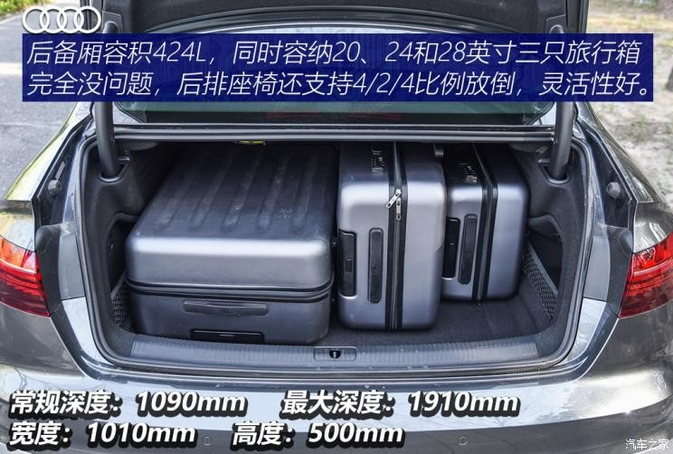

要你“好看” 测试全新奥迪A4L 45 TFSI
2020年04月04日 01:151堪比换代的外观调整
[汽车之家 专业评测] 自这代奥迪A4L上市三年多来，比较平庸的设计再加路上老能见到它的身影，我们对它的热情好像并没保持太久。宝马3系去年换代，奔驰C级也进行了中期改款，而奥迪A4L也是时候做点儿什么了。这次还真没让人失望：堪比换代的外观调整，内饰也有不小升级，那开起来呢？能不能和看起来一样“好看”？ ！
● 颜值提升很多、更运动
如果你不是一个时常关注新车资讯的人，我说眼前这家伙是全新一代奥迪A4L可能你也会相信。前脸变化尤其大，甚至采用了奥迪RS系列的专属设计元素，大家对现款奥迪A4L外观“略显平淡”的印象，可以更新一波了。
奥迪A4L 2020款 45 TFSI quattro 臻选动感型
报价:39.68万
通常情况下，中期改款车型在外观上做的最多的事情就是微调，稍微“隆重”一些可能会改变一下中网造型，而这台中期改款的奥迪A4L，中网、前包围甚至大灯造型都变了，尤其是中网，在更加扁平的基础上引用了RS系列车型的蜂窝状造型，我们试驾的过程中回头率很高。当然如果你不喜欢这么激进的造型，将来它上市后还会有另一套“温和”些的前脸风格可供选择。

如果你仔细观察的话能发现侧面腰线也进行了一些调整，原本从发动机舱贯穿至车尾的腰线改成了分段式，我们这台测试车配备了四门无钥匙进入功能，便利性不错。19英寸轮圈是新款车型新引入的，现款车型最大只有18英寸。车尾两个细节，中间镀铬条的加入让它看起来更像大哥奥迪A6L，而双边共两出真排气的保留真的是谢天谢地！
● 内饰的加法和减法
新款奥迪A4L的内饰基本保留了现款车型的样貌，没有像外观那样进行大刀阔斧的改进，碳纤维饰板的加入确实让人眼前一亮。而眼尖的你肯定一下也发现了变大的中控屏和消失的MMI旋钮，这一加一减两则运算到底做得怎么样呢？
现款车型中控屏最大尺寸也不过8.3英寸，现在则升级至10.1英寸，最重要的是加入了触屏操作功能，不用通过挡杆前方的旋钮和按键操作，想点哪里点哪里，操作变得直接了。而车机系统同样升级为最新版本，基于安卓平台，并为中国市场做了本地化处理，预装酷我音乐、喜马拉雅等应用，用户也可以通过微信小程序来下载自己喜欢的App然后同步到车机上，未来还会和天猫精灵合作，自然语义识别能力也会有进一步的提升。说了这么多的好，可是没了MMI旋钮，心里感觉有点儿空落落的。

虚拟座舱变成了真正意义上的全液晶仪表，一整块儿屏幕看着非常过瘾，并且有三种主题，每种主题下仪表盘显示的信息能够自主选择，可玩儿性很高，奥迪在全液晶仪表这方面一直走在前列。一个小细节，中央扶手箱内的Type-A电源接口换成了Type-C，是个与时俱进的变化，不过也不用太紧张，全车的充电接口也只有这一个是Type-C。
2中控屏可触摸/少了MMI旋钮
● 空间是长轴的优势
和老对手奔驰C级和宝马3系相比，奥迪A4L是唯一没有在中国市场推出标准轴距车型的，可能奥迪知道对于大部分中国消费者来说，操控和空间之间，后者更加重要。作为中期改款车型，乘坐空间不会有大的变化，来回顾一下吧。体验者的前排头部空间剩余4指，同级别车型中属于正常表现。座椅使用了新的面料搭配，官方给到的资料显示这将是新款奥迪A4L的全系标配。实际乘坐体验来看座椅和身体之间的摩擦力更大了，更利于激烈驾驶，而从家用车的角度来看，填充物稍有些硬。
后排乘坐空间表现很好，体验者的腿部空间有2拳，一般身材的朋友乘坐都能比较宽裕。但是后排中间座椅只能用来应急，靠背很硬，脚下“大鼓包”还侵占了不少空间，而且没法完全直起头。
● 储物空间和后备厢

车内储物空间就是多了一个储物格和几个卡槽，这是取消MMI旋钮带来的“福利”。值得一提的是我没在新款奥迪A4L的手套箱内看到CD机，其实这种古董配置也该退役了，但那个空间仍然被占据着，释放出来用来储物多好呢。
3动力响应更加积极
● 动力系统
中期改款的奥迪A4L在动力系统方面做出了细微改变，改为全系2.0T发动机搭配7挡双离合变速箱，不过动力有三种调校方案。今天测试的是高功率版本，也是市面上相对少见的车型。既然还是熟悉的“配方”，那是否就预示着实际的驾驶感受也能猜出个八九不离十呢？
● 这还是我们熟悉的奥迪Style吗？
这个价位的奥迪车系，不管是性能取向的奥迪S3，或者是面向普罗大众的奥迪Q5，它们都“患有”类似“脑血栓”似的动力输出“疾病”，那就是低转速时的动力响应较慢。在新款奥迪A4L上这个问题不见了。新车在自动模式，甚至节能模式下的动力响应都有了很大改善。7挡巡航时，轻点油门，变速箱反应会非常迅速。你的右脚还没完成踩油门的动作时，挡位已经来到了5挡，有时甚至会连降3挡。动力则会在不到半秒钟内随之而来。
这样的改进让你在中高速巡航时的超车再也不用“提前热身”了，甚至稍显激情的驾驶都不用麻烦运动模式出马了。同时，当你HOLD住油门超车时，变速箱也不会“八婆”似的擅作主张的升上一挡，让你瞬间一泻千里。现在的它会略显激进且知书达理的维持在4000rpm片刻，直到完成超车。这种曾经只有在运动模式下才有的“待遇”，现在自动模式下完全可以做到了。

因为自动模式有了长足的长进，运动模式则显得不再出挑。更追求平顺性和响应性的动力调校也多少让爆发力的存在感有些降低。哪怕是地板油起步，动力也不会在某个转速区间突然爆发，而是循序渐进的给到你。这种听话的感觉，仿佛女友在一夜间长大，变成一位更懂得技巧的熟女。
● 加速测试
2.0T高功率发动机的加速成绩如果能进入到6秒算是不错的成绩。新款奥迪A4L还是做到了在同级别前列的水准，尽管和全新宝马3系有些差距，但也算难觅对手了。不过轮圈轮胎都有明显升级后的成绩还是与现款车型打个平手，多少与预期有些小小的差距。
● 油耗测试
新款A4L 45 TFSI车型的油耗表现低于推荐值近2L，表现十分出色。同时，对比40 TFSI的成绩（7.6L）也十分接近，加上小于6秒的“破百”时间，可以说在工况很好的情况下，高功率并不代表就一定油耗高，反而“性价比”会更好。
4运动底盘名副其实
● 底盘结构
中期改款不仅带来了源自奥迪RS家族的中网设计，运动版车型（顶配）还拥有首次来到国内的运动悬架。除此之外四驱系统也下放到40 TFSI车型上，这次的改款从底盘方面来说还是有了不少的改进。对运动性能有一定追求的消费者，可以考虑未来上市的45 TFSI 运动版车型。
● 运动底盘名副其实
升级到19英寸的轮圈还不算完，35的扁平比简直就是在向跑车看齐，轮胎规格与自家的TT RS车型完美一致。这样一来，新款A4L的路感将迎来新的时代，尽管不算拳拳到肉，那可算是中型车中少有的底盘感受了。不过还好的是，减振器的调校还是兼顾了日常使用，否则这台中型车瞬间将变身硬核性能车。但即便如此，在日常驾驶时还是会对舒适性有些影响
转向手感的提升也是显而易见的。与动力响应性一样，也是全面覆盖，各个模式下的阻尼感都有加强，哪怕是节能模式。在随角度、随速的增益方面，细腻程度也是同样让你有种开的不是奥迪车型的错觉。在弯道中修正时有一定的底盘沟通感，这是几年前不敢相信的。可是，它又没有过分的追求路感而丢失掉舒适性。毕竟，驾驶中型车的消费者并不希望自己的座驾是一位“话痨”。
新款A4L能够拥有如此“华丽的转身”，真是让大家意想不到。尽管它可能弱化了一些动力方面的爆发力，但是更加可控的动力输出更能让驾驶员有操控车辆的乐趣，底盘在提供不错的路感时又保证了该有的质感和舒适性，它也没有因为使用TT RS规格的轮胎就忘记自己还是一台中型车的事实。它确实运动了，但它并不吓人。
● 刹车测试
既然拥有TT RS规格的高性能夏季胎，那交出小于38米的刹车成绩也是理所应当的。全力制动过程中给人的信心还是挺足的，尤其是刹车后段的制动力。刹车踏板的脚感也适合，力度反馈始终稳定。
● 绕桩测试
绕桩测试中，充分体现出薄胎壁不易变形的优势，能够提供出色的支撑性。新款奥迪A4L选用的高性能夏季胎，机械抓地力也足够优秀。当然不足的是发动机的摆放位置太靠近前方，这也解释了为何前中置车型的动态表现会更好的原因。
● 麋鹿测试
为了更全面的展示车辆紧急避让时的表现，我们按照国际ISO 3888-2麋鹿测试标准进行桩桶摆放（具体摆放方式与桩桶间距如图），针对奥迪A4L 45 TFSI进行测试，测试车辆内除驾驶员外，为空载模式，油箱为满油。
由于麋鹿测试的表现与驾驶员驾驶技术有直接关联，因此此次的麋鹿测试我们的驾驶员为评测导购组的专业车手——王涛。测试时，我们从时速65km/h开始，每个速度级增加5km/h，以此类推。每个速度级如果尝试3次没有通过，且驾驶员判断车辆无法通过该速度级（尽可能保证安全），测试将终止。作为运动健将级的奥迪A4L 45 TFSI在紧急避让项目中会有何种表现值得期待。
最终通过时速为77km/h，车身的姿态和主观驾驶的感受都表现出色。尤其是底盘的支撑性，能够明显感觉到在保持车身姿态时又没有把左右压力传递到轮胎上，并且在极限到来时车身在可控范围之内。四驱系统也保证了尾部的主动性，而非靠惯性跟随车头。
● 噪音测试

说了这么多大轮圈和高性能胎的优势，到了噪音测试时，它的弊端就显现了。哪怕在60km/h的时速下，驾驶员都能明显感觉到胎噪的存在。同时，风噪也会随着速度的攀升随之而来，这也是为何新款A4L在80km/h、120km/h的噪音值不理想的原因。
● 总结：
当宝马3系都越来越追求全面性时，一台豪华品牌中型车还有追求运动化的必要吗？况且它并没有标准轴距版的车型，仿佛如此道来它更没有追求运动化的必要了。但是奥迪A4L却在中期改款之际把车型一分为二，一边运动，一边豪华。运动版本的车型甚至有了奥迪RS家族式的前脸，向TT RS看齐的轮胎尺寸。抛开这些“外在”升级之外，奥迪A4L在动态方面的表现也完成了一次蜕变。这样的表现让我不得不幻想，如果奥迪A4没有“L”会不会更加运动？当然，今天的它能兼顾舒适向运动化更迈进一步是大部分人的福音。（图/文/摄 汽车之家 洪冰清 李乔辰）